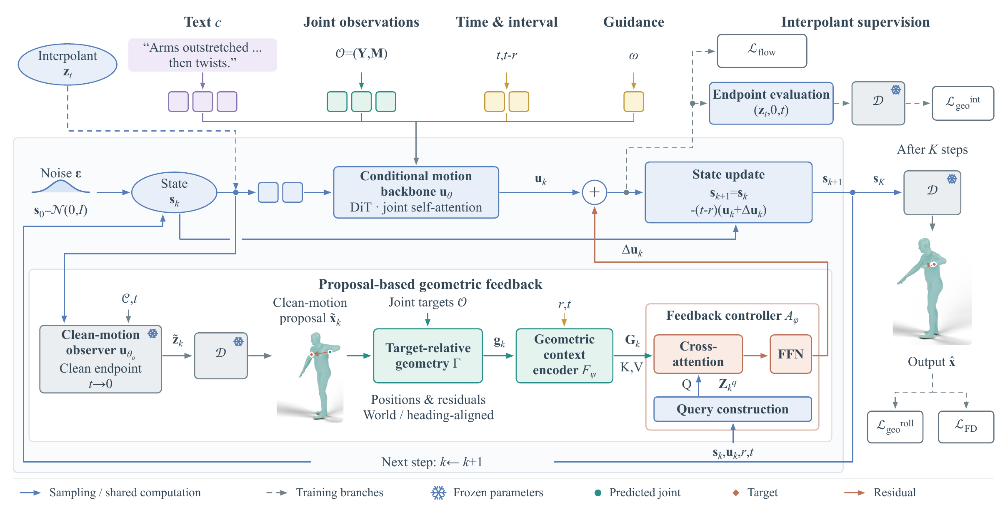

MoGeFi: Learning Geometric Feedback for Few-Step Human Motion Generation
Abstract
Interactive human motion generation calls for natural, text-aligned movement, accurate geometric control, and low latency. Precise control often relies on costly test-time refinement, while fast generators can leave substantial joint errors. We present MoGeFi, a directly trained framework that combines one- and few-step conditional motion generation with learned geometric feedback. The backbone learns finite-interval updates in motion latent space without diffusion-teacher distillation. Text and structured joint observations interact in a shared Transformer to shape these updates. For controlled synthesis, we introduce proposal-based geometric feedback: a clean-motion proposal predicted from the current latent state is decoded to provide joint geometry for comparison with the targets. This proposal is refreshed at each sampling step, guiding state-dependent corrections to the backbone update. Geometric and representation-space Fréchet objectives supervise the model's own short rollouts, training these corrections through their effect on target satisfaction and complete-motion statistics. Inference uses only forward evaluations, with no per-sample optimization. Extensive experiments on HumanML3D demonstrate that MoGeFi combines high motion quality, accurate geometric control, and interactive latency across multiple motion generation tasks. In sparse joint control, it achieves lower FID and roughly halves trajectory and location error rates compared with MaskControl-Fast, while generating each sequence in approximately 61 ms. Ablations show that explicit geometric feedback and per-step proposal refresh improve constraint satisfaction. We also execute generated motions on a physical humanoid using an existing motion tracker.

Text-to-motion generation
Ours: 2 sampling steps. Real: dataset reference.
Sparse joint control
All methods receive the same control targets. Red timeline ticks mark the target frames.
Real-robot deployment
Human references, SONIC simulation, and physical Unitree G1 execution. Independently recorded sequences are aligned by action phase.